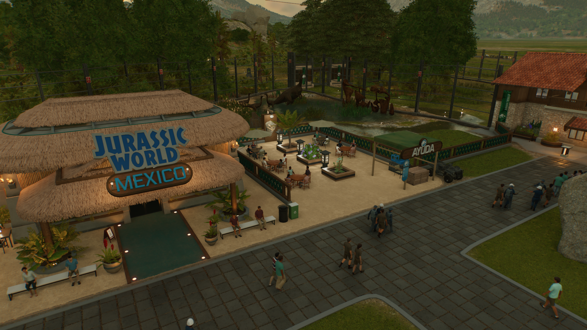
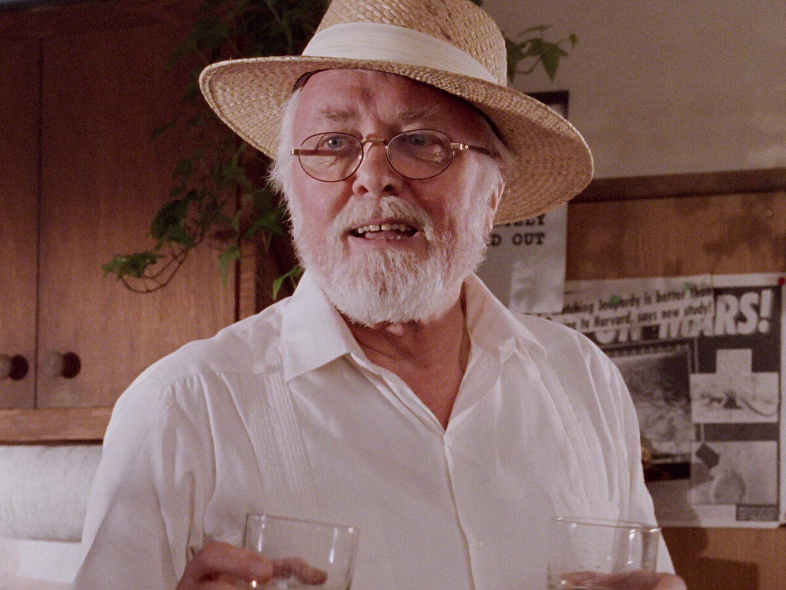
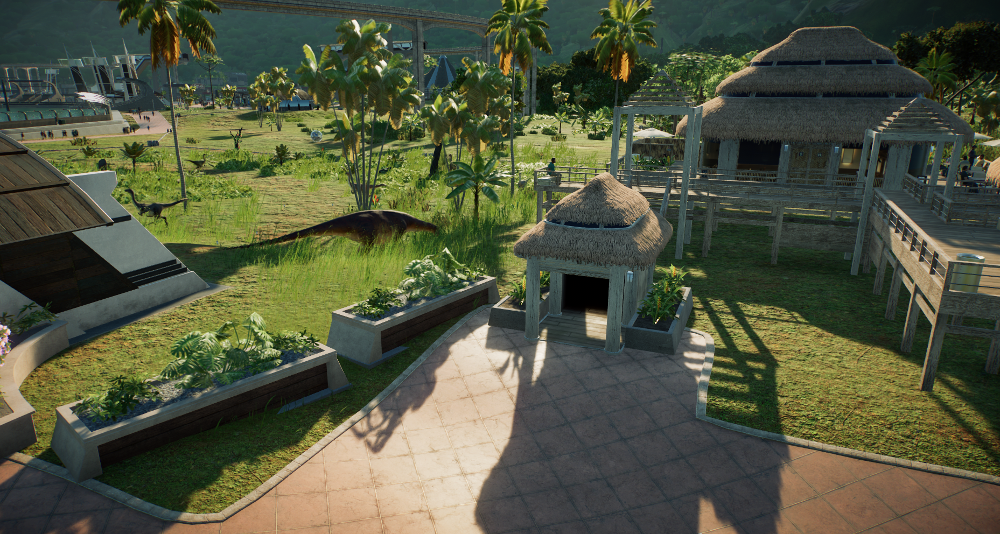

Sobre el parque:
En el año 2015, después del éxito de los parques Jurassic Park originales, la compañía InGen, en colaboración con la compañía Masrani Global, inauguró la reserva Yáaxil, un parque temático revolucionario situado en a las afueras de la Ribera Maya. Diseñado para ofrecer una experiencia única y educativa, la reserva Yáaxil combinaba tecnología avanzada con hábitats naturales para recrear a los dinosaurios de manera segura y espectacular.

El visionario creador de los parques originales, el multimillonario y empresario John Hammond, fue una figura inspiradora en los inicios del proyecto. Aunque Hammond ya no estaba directamente involucrado en la gestión diaria de la reserva, su sueño de volver a conectar a la humanidad con los dinosaurios se convirtió en realidad, y su legado vivió en cada rincón del parque. La apertura fue un enorme éxito, atrayendo millones de visitantes de todo el mundo, quienes quedaron maravillados con la innovación y la belleza de los dinosaurios en un entorno controlado.

Gracias a la dedicación y la visión de Hammond, la reserva Yáaxil se convirtió en un símbolo de avances científicos y tecnológicos, demostrando que con responsabilidad y respeto por la naturaleza, era posible hacer realidad los sueños más increíbles.
